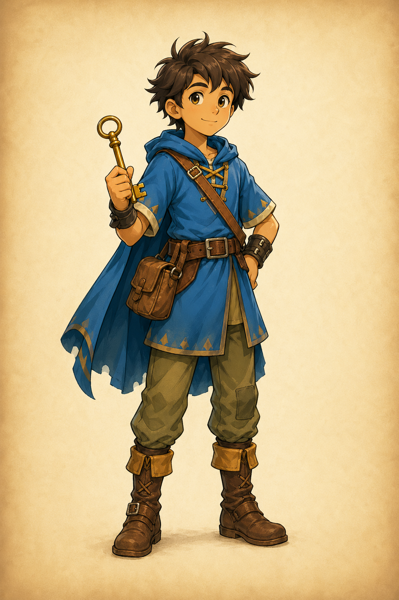
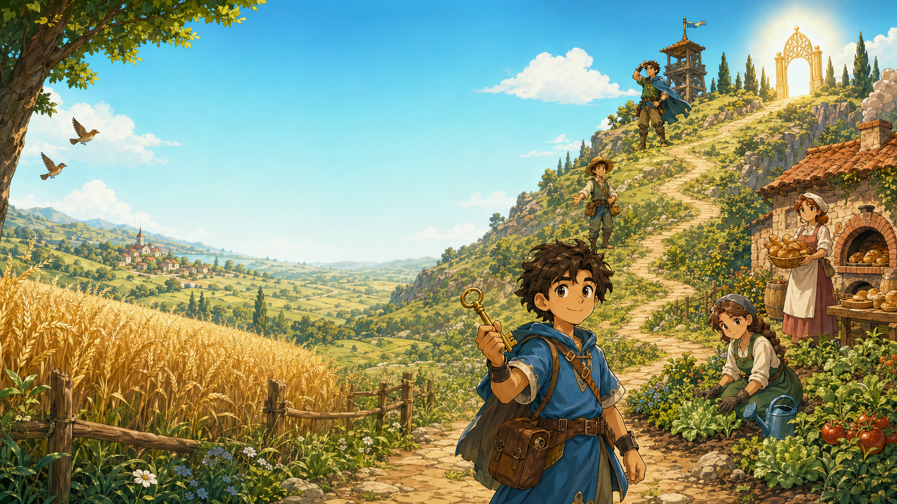
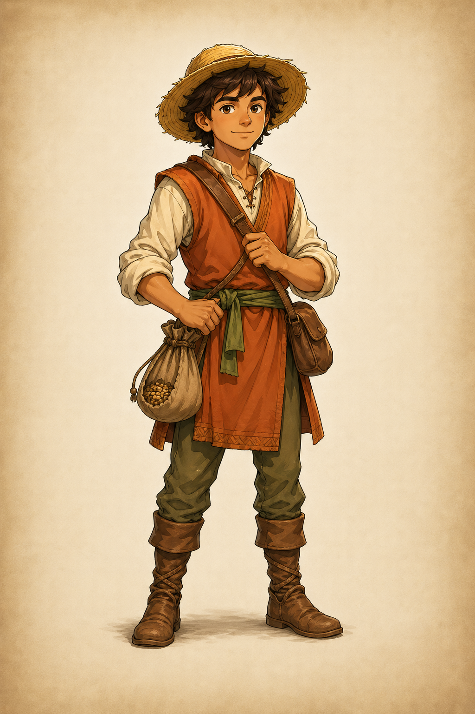
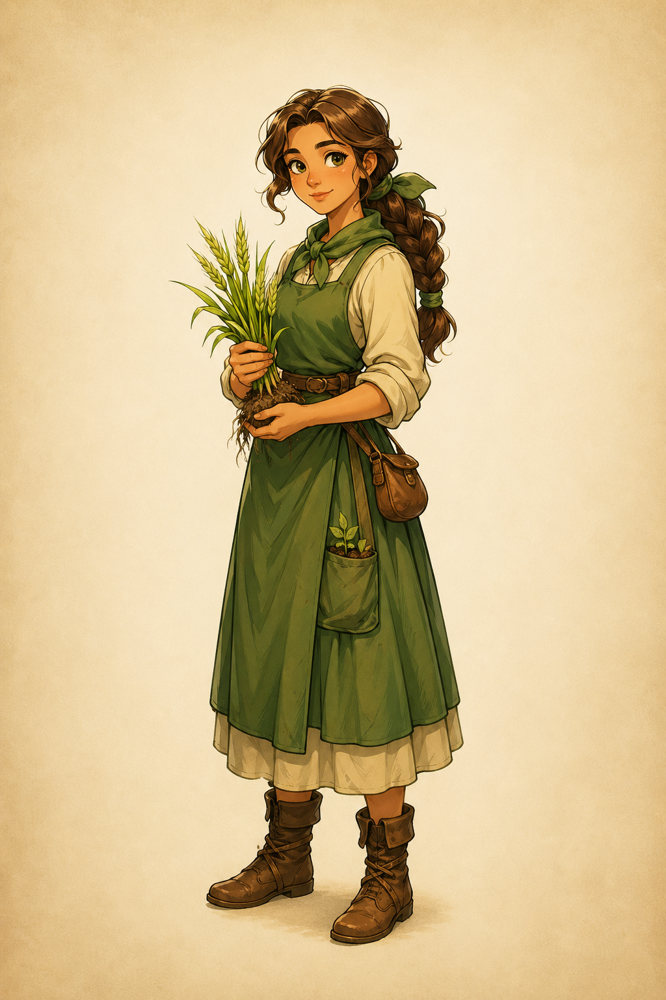
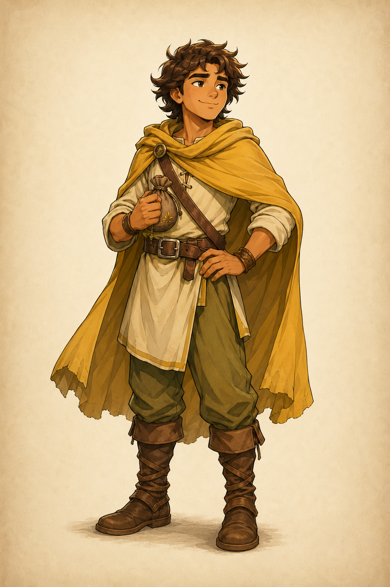
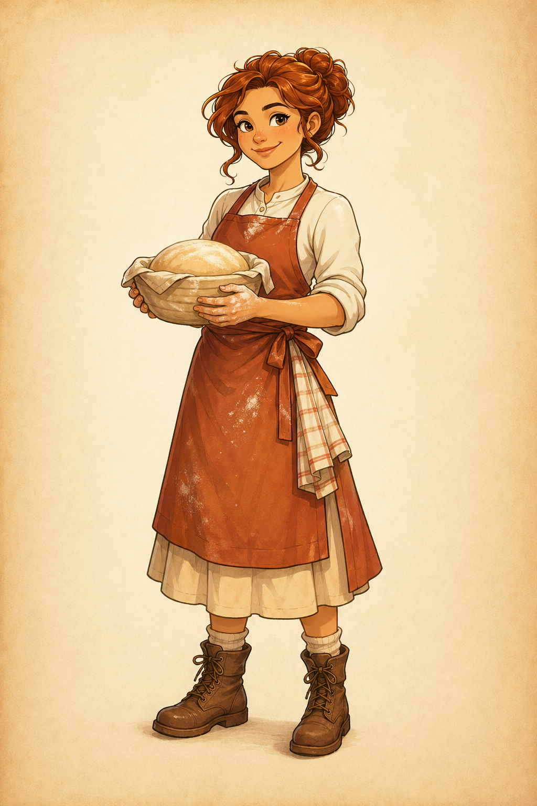

Avatar
Mika
Findet Schlüssel, prüft Hinweise und verbindet die vier Gleichnisse zu einem Lernpfad.
Q1 Evangelische Religionslehre
Begleite Mika durch eine Comic-Landschaft, sammle vier Schlüssel, löse Rätsel zu den Wachstumsgleichnissen und öffne am Ende das Tor des Reiches Gottes.


Avatar
Findet Schlüssel, prüft Hinweise und verbindet die vier Gleichnisse zu einem Lernpfad.

Begegnung 1
Erklärt den Sämann und fragt nach Böden, Frucht und Aufnahme.

Begegnung 2
Zeigt, warum Wachstum geschieht, ohne vollständig gemacht zu werden.

Begegnung 3
Führt vom kleinen Senfkorn zur großen Weite und zum Schutzraum für andere.

Begegnung 4
Erfahrbar macht sie, wie Sauerteig den ganzen Teig von innen verändert.